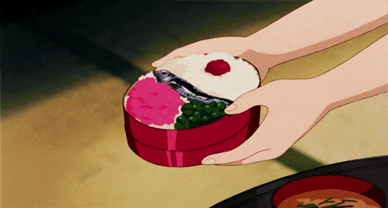

BENTO BOX

Description
Bento is a traditional, single-portioned Japanese lunch box. It is common for (and, to a point, expected that) mothers make bento for their children.
Ingredients
- 1 cup cooked white rice
- 1 umeboshi
- 1 shishamo
- 1 tbsp oil
- Handful frozen edamame
- 1 tbsp sakura denbu
Steps
- Put cooked rice in your bento box about 3/4 of the way full (leave some room at the top for your toppings and to be able to put the lid on).
- Take 1 umeboshi and put it on one side of the rice.
- In a small pan, heat the oil on medium-high. Cook one shishamo on both sides until cooked.
- Place the cooked shishamo across the middle of the bento box on the rice.
- Boil water in a small pot. Put in a handful of frozen edamame and cook according to package instructions.
- Once cooked, pop the edamame beans out of the pod. Arrange them on the rice to fill up a little less than one quarter of the bento box, under the shishamo.
- Sprinkle the sakura denbu on the rice next to the edamame.
- Enjoy whenever it's lunch time! Put a lid on it and pack it away to take with you.
(find the link to the original recipe here!)
Home